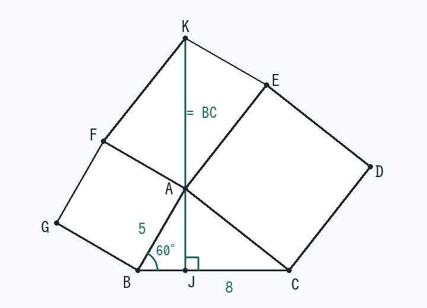

第3回 正方形2つと七角形の面積（合同の証明つき）
三角形 ABC において、四角形 BAFG は辺 AB を1辺とする正方形、四角形 CDEA は辺 AC を1辺とする正方形である。A から辺 BC に垂線をひき、BC との交点を J、線分 JA を A の方向にのばした直線上に AK = BC となる点 K をとる。
(1) △FAK ≡ △EKA を証明せよ。
(2) AB = 5 cm、BC = 8 cm、∠ABC = 60° のとき、七角形 BCDEKFG の面積を求めよ。
(1) △FAK ≡ △EKA を証明せよ。
(2) AB = 5 cm、BC = 8 cm、∠ABC = 60° のとき、七角形 BCDEKFG の面積を求めよ。

解法の型
正方形つきの図で「合同を示せ」→ 材料は「正方形の等辺」「正方形の90°」「垂線の90°」の3つだけ。90°を足し引きして等しい角を作る。
面積は、頂点から切り分けて、合同な三角形を数える。
(1) の証明
- 等しい辺を書き込むFA = AB（正方形 BAFG） AE = AC（正方形 CDEA） AK = BC（条件）
- ∠FAK = ∠ABC を出す
∠BAJ = 90° − ∠ABC（△ABJ は直角三角形）
∠BAK = 180° − ∠BAJ = 90° + ∠ABC（K は JA の延長上）
∠FAK = ∠BAK − ∠BAF = (90° + ∠ABC) − 90° = ∠ABC - △FAK ≡ △ABC（2辺とその間の角）FA = AB、AK = BC、∠FAK = ∠ABC → KF = AC
- 反対側も同じ∠EAK = ∠CAK − ∠CAE = (90° + ∠ACB) − 90° = ∠ACB
AE = CA、AK = CB → △EAK ≡ △CAB → EK = AB - 3辺を並べて結論
△FAK：FA = AB、AK、KF = AC
△EKA：EK = AB、KA、AE = AC
3辺がそれぞれ等しい → △FAK ≡ △EKA （証明終）
(2) の計算
- 七角形を A から切り分ける
七角形 = 正方形BAFG + 正方形CDEA + △ABC + △AEK + △AKF
(1) より △AEK ≡ △AKF ≡ △ABC なので、面積は △ABC の3つ分になります。
七角形 = AB² + AC² + 3 × △ABC - AC² を出す（√は開かない）∠ABC = 60°、AB = 5 → BJ = 2.5、AJ = 2.5√3、JC = 8 − 2.5 = 5.5
AC² = (2.5√3)² + 5.5² = 18.75 + 30.25 = 49 - △ABC の面積S = ½ × 8 × 2.5√3 = 10√3
- 合計するAB² + AC² = 25 + 49 = 74 3 × 10√3 = 30√3
七角形 BCDEKFG = 74 + 30√3 (cm²)
検算：正方形だけで 74、三角形3つ分が約52。合計 約126 で、図の大きさと合います。内訳を声に出すと足し忘れがすぐ見つかります。
覚えるべきこと（在庫に入れる1行）
正方形の90°を足し引きして等しい角を作る／面積は頂点から切り分けて合同な三角形を数える
類題（翌日、何も見ずに）
- 同じ図で、△AEF（正方形の間にできる三角形）の面積は △ABC と比べてどうか。
答え
∠EAF = 360° − 90° − 90° − ∠BAC = 180° − ∠BAC なので sin が等しく、½·AF·AE·sin∠EAF = ½·AB·AC·sin∠BAC。つまり △ABC と等しい。
- AB = 4、BC = 6、∠ABC = 90° のときの七角形の面積。
答え
AC² = 16 + 36 = 52、△ABC = 12 なので 16 + 52 + 36 = 104 cm²